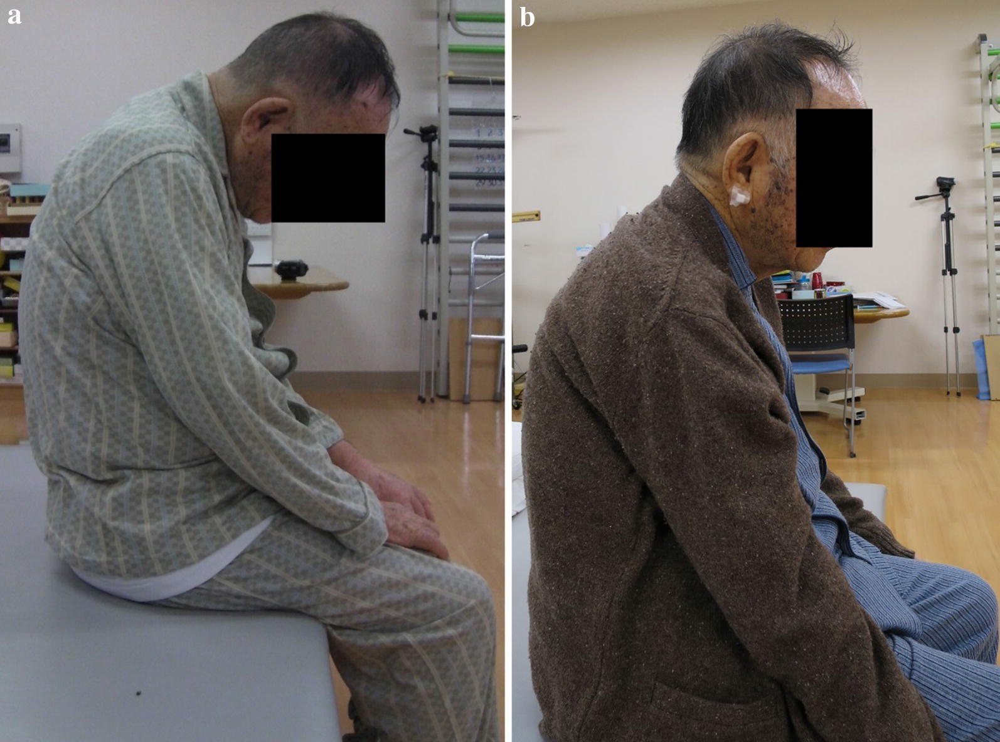

Página 1 · E1
A queixa é fraqueza: por onde começar?
“Paciente sem força para manter a cabeça ereta — o que se topografa antes de nomear a doença?”
Raciocínio sindrômico, não checklist solto
A queixa de fraqueza exige raciocínio sindrômico organizado. Checklist genérico de anamnese (início, curso, fatores de melhora/piora, sintomas associados, comorbidades) só vale se, frente às respostas, se monta um diagnóstico. Sem isso, sobra narrativa — e falta topografia.
O alvo inicial é a abordagem sindrômica do paciente com fraqueza: identificar a queixa e topografar o elo comprometido. Catalogar doenças “incomuns no dia a dia” que pesam em prova vem depois de saber onde a cadeia da força quebrou.
O desafio da cabeça que cai
Porta típica: paciente em ambulatório ou emergência que segura a cabeça com as mãos porque não tem força para mantê-la reta. A pergunta útil não é “qual o nome da doença na primeira frase”, e sim: por onde começar o raciocínio — e o que se topografa antes de rotular a entidade.
Caso longo: mais informação, mais resposta
Quanto maior o tamanho do caso, mais informação ele entrega — e mais resposta ele contém. A tendência errada é “enxergar o que não tem”. Método: anotar e sublinhar os pontos positivos que o caso apresentou — o que está escrito, não o que a imaginação completa.

Quiz — fixação
-
Paciente segura a cabeça com as mãos por fraqueza cervical. Qual a melhor postura cognitiva inicial?
Gabarito B. a primeira decisão é abordar a queixa, não catalogar doença rara na primeira linha.
(A) pula topografia e pode acertar por sorte; (C) é a isca que o caso seguinte desmonta; (D) RM de crânio serve sobretudo ao 1º NMS, não é default de toda fraqueza. sedução do “nome de prova” (A); âncora em comorbidade escrita (C); automatismo de neuroimagem (D).
-
Em caso clínico longo de prova, qual atitude reduz erro?
Gabarito B. caso longo entrega a resposta; inventar achado é o erro clássico.
(A) e (D) inventam ou ancoram em isca; (C) descarta pistas (pele/neoplasia) que fecham miopatia inflamatória. o cérebro “fecha o padrão” com o que estudou — e falha no que não está escrito.